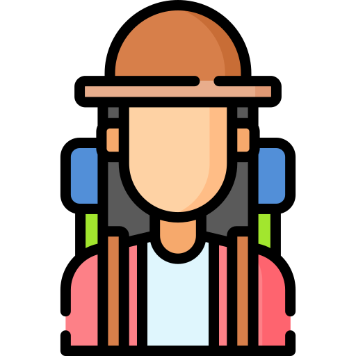
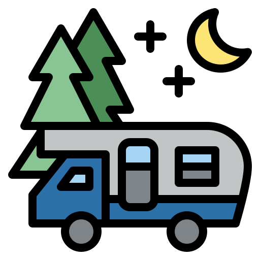

Backpacking
Camping is my absolute favorite thing to do! There is nothing quite as rejuvinating as spending a night or three in nature. Backpacking is probably the most difficult. Most backpacking sites are at least a couple miles from the parking lot. It takes a little more planning to be sure you are well prepared with whatever you may need while keeping your pack light enough to carry. Backpacking sites are usually much more quiet and you really get to be fully immersed in nature.
Car Camping

Car camping is much more accesible for most people. Anything you want you just toss in the car, pack weight is not an issue. At most campgrounds you park directly next to your site. This is great for families and less physically able people. It's nice to be able to bring comfortable chairs and coolers full of delicious food to cook over the fire. Car camping is a lot of fun during the day, but the sounds of car doors slamming all night takes away from the peace.
Campers
Campers and RV's are great for people that either can't physically manage to set up a campsite or just don't want to. You have all the luxuries of home; power, running water, comfy beds, etc., but you get to wake up in some of the most beautiful places. Go play outside!